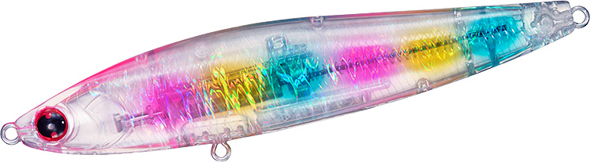
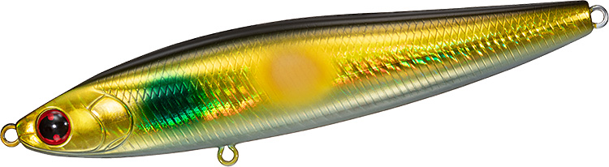
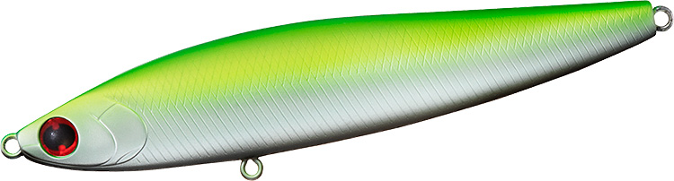
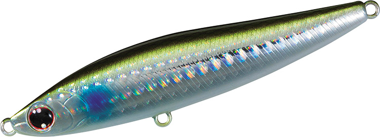

モアザン スイッチヒッター105S
（MORETHAN SWITCH HITTER 105S）
モアザン スイッチヒッター105SはDAIWA（ダイワ）のシンキングペンシルです。
ただ巻きひとつでS字軌道を描き、シーバスを「誘き寄せて釣る」可変S字スラロームが特徴。スローに誘えて場所を選ばないスローシンキング設定で、水深約20〜80cmを攻略できます。リバーゲームやドリフト釣法にも合わせやすい105mm・21.2gのモデルです。

画像出典:DAIWA公式HP
スペック
- メーカー
- DAIWA（ダイワ）
- タイプ
- シンキングペンシル（スローシンキング）
- 全長
- 105mm
- 自重
- 21.2g
- 有効レンジ
- 約0.2〜0.8m
- フック
- #4トレブル
- リング
- #3
- アクション
- ワイドスラローム
- 飛距離
- MAX 77.0m／Ave 74.0m
- ターゲット
- シーバス
- 価格
- 2,200円（税抜）
▼今すぐチェック

スイッチヒッター105Sの特徴
ただ巻きでS字を描く、スローシンキングの可変S字スラローム
-
魅惑の可変S字スラローム
不規則にS字蛇行しながら、追われている小魚のように泳ぎます。巻き速度や流速の変化で、ヒラ打ちやI字アクションが自動的に出て「食わせの間」を演出します。
-
MAGROCK+Rシステム
立ち上がり向上機能を加えた磁着重心移動システムで、Ave70m以上の飛距離と、見切られにくい立ち上がりを両立しています。
-
スローに誘えるスローシンキング
水深約20〜80cmを狙えるスローシンキング設定で、リバーゲームやドリフト釣法にも合わせやすい設計です。
スイッチヒッター105Sの使い方
このS字アクションをいちばん引き出せるのはスローリトリーブ。ただ巻きだけで、不規則なS字とヒラ打ち・I字の変化が勝手に出ます。
河川では流れに乗せてドリフトさせると、レンジをキープしながら自然にS字で見せられます。
スイッチヒッター105Sの得意な状況
昼夜を問わず、河川のドリフトやリバーゲームで流れの中を通したいとき。65S・85Sより大きいシルエットで、ベイトが大きめのときやアピールを上げたいときにも向いています。
ワンポイント
同じ105mmにはフローティングの105F（水深0〜50cm）もあります。表層を引きたいときは105F、少しレンジを入れてスローに見せたいときは105Sと使い分けると、同じS字アクションでレンジを変えられます。
スイッチヒッターシリーズの使い分け
| モデル | 全長／自重 | 得意な場面 |
|---|---|---|
| スイッチヒッター65S | 65mm／13.4g | 約0.2〜0.8m。不規則スラローム。バチ抜けや爆風時の遠投に |
| スイッチヒッター85S | 85mm／20g | 約0.2〜1.0m。不規則スラローム。シャロー〜中層を遠投で探る基準サイズ |
| スイッチヒッター105S | 105mm／21.2g | 約0.2〜0.8m。スローシンキングのワイドS字スラローム（本記事のモデル） |
65Sと85Sは同じ「不規則スラローム」でサイズ違い、105SはS字スラロームのスローシンキングで性格が少し違います。ベイトの大きさと、届かせたい距離・レンジで選び分けましょう。ほかに浮き上がりを早くした85S-LV、120S+R、フローティングの105F・120F+Rもあります。
人気カラー
公式ラインナップから4色を紹介します（3Dイナッ子の画像はシリーズ共通の画像です）。

クリアキャンディクリアボディにカラフルなホロの入ったカラー。澄み潮や明るい時間帯のスレた魚に。

アデルゴールドグローイナッコゴールドのフラッシングとグローを組み合わせたイナッコ系。濁りや夜の河川に。

マットライムパールブラックベリーマットライムとブラックベリーで強くシルエットを出すアピールカラー。

3Dイナッ子イナッコ（ボラの幼魚）を意識したナチュラルカラー。イナッコパターンの河川や干潟に。
画像出典:DAIWA公式HP
スイッチヒッター105Sに似ているルアー
-
 モアザン スイッチヒッター85S
DAIWA
詳細はこちら＞
モアザン スイッチヒッター85S
DAIWA
詳細はこちら＞
同じスイッチヒッターの85mm・20g。不規則スラロームで、より遠投して広く探りたいときに。
-
 モウラ105S
POP SEA CREW
詳細はこちら＞
モウラ105S
POP SEA CREW
詳細はこちら＞
全長105mm・自重17gのシンキングペンシル。同じ105mmで、レンジ0〜20cmの表層付近をスラロームで見せたいときに。
-
 マニック115
DUO
詳細はこちら＞
マニック115
DUO
詳細はこちら＞
全長115mm・自重16gのシンキングペンシル。バチ抜けや表層の定番として。